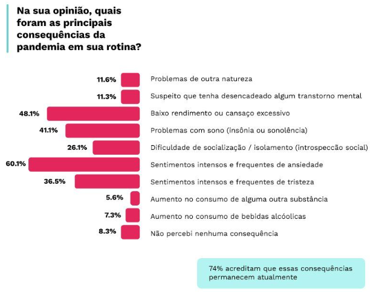
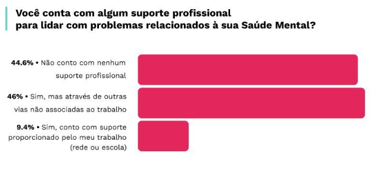

Estudos apontam a queda da saúde mental dos docentes
Mais de 20% dos educadores brasileiros consideram sua saúde mental ruim ou muito ruim, indica a pesquisa “Saúde Mental dos Educadores 2022”, que ouviu mais de 5.000 profissionais da educação, entre professores e gestores de todos os Estados e do Distrito Federal.
Os educadores apontaram sentimentos frequentes de ansiedade (60,1%); baixo rendimento e cansaço excessivo (48,1%); e problemas com o sono (41,1%). Dificuldade de socialização e isolamento, sensação de tristeza e aumento do consumo de psicoativos e álcool também foram relatados.
Olhando apenas superficialmente para à sociedade, nota-se que tudo está de volta ao normal, porém quando se há um olhar mais detalhado e voltado aos indivíduos,percebe-se que muitas questões ainda estão vivas em cada um. Isso fica ainda mais evidente quando volta-se o olhar para os professores, profissão que sofreu em excesso na pandemia e nos anos decorrentes.
Síndrome de Burnout
Um termo que passou a ser corriqueiro no vocabulário da pandemia foi a Síndrome de Burnout. Incluída em 2022 no Código Internacional de Doenças (Cid-11), a síndrome tem como principais características a falta de energia e entusiasmo e o sentimento de forte esgotamento relacionado ao trabalho. “Também nota-se baixa realização pessoal, autoavaliação negativa e um excesso de despersonalização, ou seja, tratar o outro de uma forma fria justamente como forma de se proteger”, explica Naiana Dapieve Patias, docente da UFSM.
- Falta de energia, entusiasmo, forte esgotamento em relação ao trabalho, autoestima baixa envolvendo realizações, tratando os próximos de forma fria para se defender
O contexto pré-pandemia, marcado pelo esgotamento emocional, a falta de infraestrutura e os baixos salários, já facilitaria o surgimento da Síndrome de Burnout entre os professores. Porém a instauração de toda a crise causada pelo covid-19 potencializou esses problemas e acrescentou novos, resultando no aumento do número de casos envolvendo essa profissão. “Muitos passaram por situações estressoras crônicas, não tiveram ferramentas pessoais e institucionais para superar [isso] e acabaram se afastando do trabalho”, relata Naiana.
Sendo ainda mais agravada pela pandemia global, houveram-se questionamentos acerca das mudanças que este problema sanitário causou no dia-a-dia dos professores, onde (60,1%) declaram possuir sentimentos intensos e frequentes de ansiedade, (48,1%) relataram baixo rendimento ou cansaço excessivo, (41,1%) sentiram problemas com sono, como insônia ou sonolência, entre muitos outras consequências sentidas

Isso mostra que, além de serem extremamente afetados pelo isolamento social que ocorreu, muitos não conseguiram continuar normalmente com suas vidas, por não possuírem ajuda nem suporte, para que fossem menos afetados com todo este acontecimento. Aonde, ainda com toda a circunstância que ocorria no mundo, precisavam dar aulas, muitas vezes estressantes, sem apoio nenhum das escolas, isolados de seus parentes, amigos, enfrentando sozinhos e ainda lidando com alunos, em que muitos não queriam aprender, ou tinham dificuldades para entrar nas aulas, ouvir os professores, tudo isso sem nenhum suporte

Houve aumento significativo, entre 2021 e 2022, da proporção de educadores que referiu ter algum tipo de apoio advindo da própria escola ou de fora dela. Há, no entanto, prevalência significativamente maior de educadores do ensino privado que referiram ter algum tipo de apoio para lidar com a própria saúde mental em relação ao ensino público.